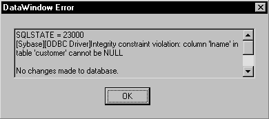
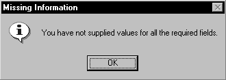

There are several types of errors that can occur during DataWindow processing:
This section explains how to handle the last two types of errors.
When using the Retrieve or Update method in a DataWindow control, you should test the method's return code to see whether the activity succeeded.
 Do not test the SQLCode attribute After issuing a SQL statement (such as CONNECT, COMMIT, or DISCONNECT)
or the equivalent method of the transaction object, you should always
test the success/failure code (the SQLCode attribute in
the transaction object). However, you should not use
this type of error checking following a retrieval or update made
in a DataWindow.
Do not test the SQLCode attribute After issuing a SQL statement (such as CONNECT, COMMIT, or DISCONNECT)
or the equivalent method of the transaction object, you should always
test the success/failure code (the SQLCode attribute in
the transaction object). However, you should not use
this type of error checking following a retrieval or update made
in a DataWindow.
PowerBuilder If you want to commit changes to the database only if an update succeeds, you can code:
IF dw_emp.Update() > 0 THEN
COMMIT USING EmpSQL;
ELSE
ROLLBACK USING EmpSQL;
END IF
Web ActiveX To commit changes to the database only if an update succeeds, you can code:
number rtn;
rtn = dw_emp.Update( );
if (rtn == 1) {trans_a.Commit( );
} else {trans_a.Rollback( );
}
The DataWindow control triggers its DBError event whenever there is an error following a retrieval or update; that is, if the Retrieve or Update methods return –1. For example, if you try to insert a row that does not have values for all columns that have been defined as not allowing NULL, the DBMS rejects the row and the DBError event is triggered.
By default, the DataWindow control displays a message box describing the error message from the DBMS, as shown here:

In many cases you might want to code your own processing in the DBError event and suppress the default message box. Here are some tips for doing this:
 About DataWindow action/return codes Some events for DataWindow controls
have codes that you can set to override the default action that
occurs when the event is triggered. The codes and their meaning
depend on the event. In PowerBuilder, you set the code with a RETURN
statement. In the Web ActiveX, you call the SetActionCode or setActionCode
method.
About DataWindow action/return codes Some events for DataWindow controls
have codes that you can set to override the default action that
occurs when the event is triggered. The codes and their meaning
depend on the event. In PowerBuilder, you set the code with a RETURN
statement. In the Web ActiveX, you call the SetActionCode or setActionCode
method.
PowerBuilder Here is a sample script for the DBError event:
// Database error -195 means that some of the
// required values are missing
IF sqldbcode = -195 THEN
MessageBox("Missing Information", & "You have not supplied values for all " &
+"the required fields.")
END IF
// Return code suppresses default message box
RETURN 1
During execution, the user would see the following message box after the error:

Web ActiveX In JavaScript, the code for the DBError event might look like this:
// Database error -195 means that some of the
// required values are missing
if (sqldbcode == -195) { alert("Missing information:\n" + "You have not supplied values for all " +
"the required fields.");
}
// Action code suppresses default message box
dw_1.SetActionCode(1);
A DataWindow control's Error event is triggered whenever an error occurs in a data or property expression at execution time. These expressions that refer to data and properties of a DataWindow object might be valid under some execution-time conditions but not others. The Error event allows you to respond with error recovery logic when an expression is not valid.
In PowerBuilder, when you use a data or property expression, the PowerScript compiler checks the syntax only as far as the Object property. Everything following the Object property is evaluated at execution time. For example, in the following expression, the column name emp_name and the property Visible are not checked until execution time:
dw_1.Object.emp_name.Visible = "0"
If the emp_name column did not exist in the DataWindow, or if you had misspelled the property name, the compiler would not detect the error. However, at execution time, PowerBuilder would trigger the DataWindow control's Error event.
The Error event is triggered even if you have surrounded an error-producing data or property expression in a Try-Catch block. The catch statement is executed after the Error event is triggered, but only if you do not code the Error event or do not change the default Error event action from ExceptionFail!. The following example shows a property expression in a Try-Catch block:
TRY
dw_1.Object.emp_name.Visible = "0"
CATCH (dwruntimeerror dw_e)
MessageBox ("DWRuntimeError", dw_e.text)
END TRY
The Error event has several arguments that provide information about the error condition. You can check the values of the arguments to determine the cause of the error. For example, you can obtain the internal error number and error text, the name of the object whose script caused the error, and the full text of the script where the error occurred. The information provided by the Error event's arguments can be helpful in debugging expressions that are not checked by the compiler.
If you catch a DWRuntimeError error, you can use the properties of that class instead of the Error event arguments to provide information about the error condition. The following table displays the correspondences between the Error event arguments and the DWRuntimeError properties.
When the Error event is triggered, you can have the application ignore the error and continue processing, substitute a different return value, or escalate the error by triggering the SystemError event. In the Error event, you can set two arguments passed by reference to control the outcome of the event.
For a complete description of the arguments of the Error event, see the DataWindow Reference .
 When to substitute a return value The ExceptionSubstituteReturnValue! action allows you to substitute
a return value when the last element of an expression causes an
error. Do not use ExceptionSubstituteReturnValue! to substitute
a return value when an element in the middle of an expression causes
an error.
When to substitute a return value The ExceptionSubstituteReturnValue! action allows you to substitute
a return value when the last element of an expression causes an
error. Do not use ExceptionSubstituteReturnValue! to substitute
a return value when an element in the middle of an expression causes
an error.